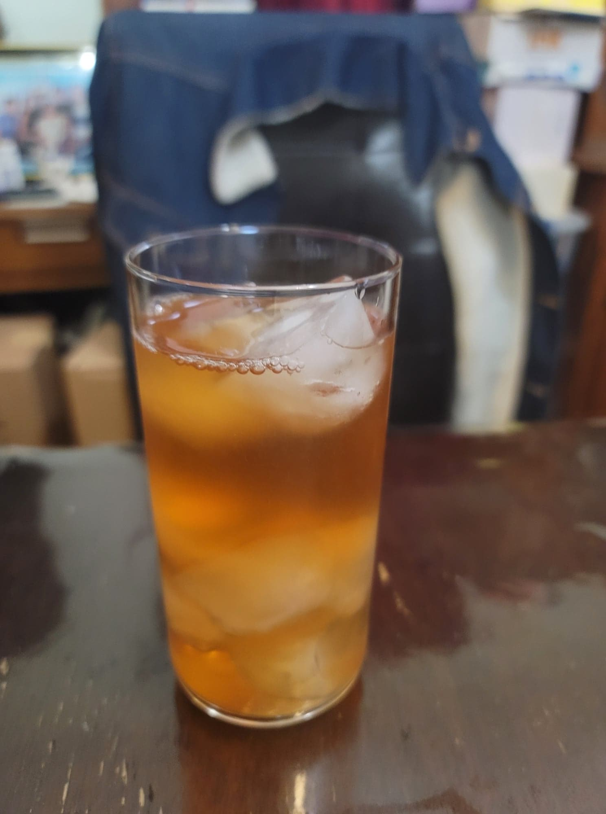

Rose Kombucha

Ingredients:
- 4 cups Kombucha, after 1st fermentation
- 4 tbsp Rose syrup
Instructions:
- Distribute the rose syrup evenly into 2 16oz flip-top bottles. Fill the remaining space in the bottles with kombucha. Let ferment for 3-7 days or until carbonated to preference. Then refrigerate and serve cold over ice.